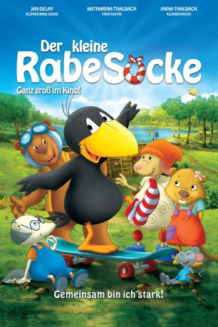

gesehen am 06.03.2016
gesehen am 06.03.2016 
 IMDB-Wertung: 6.3 / 10
IMDB-Wertung: 6.3 / 10  Metascore:
Metascore: 
Animationsfilm für kleine und große Zuschauer. In einer universellen Geschichte über Freundschaft, Loyalität und Ehrlichkeit müssen sich der freche wie liebenswürdige „kleine Rabe Socke“ und seine Freunde einer großen Herausforderung stellen: Um ihren geliebten Wald vor einer Überschwemmung zu retten gilt es allen Mut zusammenzunehmen und über den eigenen Schatten zu springen.
Jahr: 2012
Dauer: 78 Minuten
FSK:
Land: Deutschland Studio: UFATonspuren:
Untertitel:
Auflösung: 1080p (1920x1080) Größe: 4177 MB
Genre: Komödie, Abenteuer, Animation/Trick, Familie
Regisseur: Ute von Münchow-Pohl, Sandor Jesse
Drehbuch: Katja Grübel, Nele Moost, Annet Rudolph
Soundtrack: Alex Komlew
Darsteller:
 Katharina Thalbach als Frau Dachs
Katharina Thalbach als Frau DachsDatei: X:\Kinder Collections\Kleine Rabe Socke\Kleine Rabe Socke, Der (2012, FSK, 1920x1080) 3D.mkv seit 19.11.2015
Festplatte: Kinder-Filme+Trick
 Alle Filme aus Gruppe 'Kinder Collections\Kleine Rabe Socke'
Alle Filme aus Gruppe 'Kinder Collections\Kleine Rabe Socke'
(der aktuelle Film)